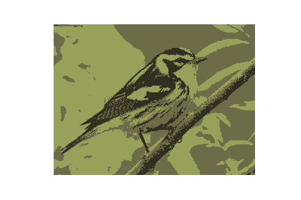

Modeling 3: Intro to machine learning with scikit-learn¶
Intro and Objectives¶
The sckit-learn module (sklearn, for short) is a full featured Python module for all kinds of data analysis and predictive modeling algorithms. We’ll do a brief overview of this widely used module and get a bit more exposure to statistical learning algorithms. We’ll also explore an unsupervised learning technique - K-means cluster analysis (via R and then via Python using scikit-learn).
Readings¶
PDSH - Ch 5 p331-375, p433-445, p462-470
PDSwR - Sec 8.1
RforE - Ch 22
ISLR - Sec 10.3
Clustering with K-Means in Python - Includes animated GIFs to help you visualize what happens during K-means algorithm
Downloads and other resources¶
Activities¶
We are going to work through a series of tutorials exploring the topic of machine learning with scikit-learn (and a little R).
Intro to machine learning with scikit-learn¶
Start by opening the notebook ml_sklearn_intro_5470.ipynb which you can find in the ml_sklearn_intro subfolder of our downloads file. The main topics we’ll be covering, include:
an introduction to the scikit-learn package
review of basic machine learning concepts
scikit-learn API details
overfitting and underfitting - the “variance-bias tradeoff”
more rows, more columns, more model complexity?
You’ll see that we’ll be using several notebooks from the PDSH text. All of the necessary files are included in the ml_sklearn_intro subfolder.
I broke the screencasts up into several chunks:
SCREENCAST: Intro scikit-learn - Part 1 - Getting started (8:33)
SCREENCAST: Intro scikit-learn - Part 2 - Types of machine learning problems (2:38)
SCREENCAST: Intro scikit-learn - Part 3 - What is scikit-learn? (23:07)
SCREENCAST: Intro scikit-learn - Part 4 - Hyperparameters and model validation (9:01)
SCREENCAST: Intro scikit-learn - Part 5 - Bias-variance tradeoff and learning curves (28:47)
SCREENCAST: Intro scikit-learn - Part 6 - Built in datasets, classification reports, API recap (9:24)
Unsupervised learning with R and Python¶
We take a brief look at both cluster analysis as well as principal components analysis (PCA). Everything
can be found in the unsupervised_learning subfolder.
Start by reading through the following notebook.
unsupervised_intro.ipynb
Then, let’s bounce back to R and do a little clustering of wines using R.
WineCluster/- cluster analysis in R
Finally, see how cluster analysis can be used to recolor image files and learn a little bit about image processing.
clusterviz/clustercolors.ipynb - Python for clustering images (clustercolors.ipynb)
WARNING: Don’t try more than about 5 colors for this example as otherwise it can take a long time to run the cluster analysis. :)
In the above example, we’ll take this picture of a Blackburnian Warbler :
and use cluster analysis to turn it into something like this:
Using R in Juypyter Notebooks via rmagic (OPTIONAL)¶
If you want to see how you can use R from within a Juyter notebook, check out the exploring_rmagic.ipynb notebook in the rmagic subfolder. You’ll see that you’ll have to do a pip install of the rpy2 module.
There are two additional notebooks in there that demo uses of rmagic to run R commands from Jupyter notebooks.
Explore (OPTIONAL)¶
Distance metrics for machine learning - compute common distance metrics using Python
I don’t like (Jupyter) notebooks
Very thought provoking presentation done by Joel Grus at JupyterCon 2018 on the shortcomings of Jupyter notebooks for sci computing.
Yihui Xie (author of the R package knitr) responds from an R perspective.
The human regression ensemble - just eyeball it
The perils of data anonymization
Often people will try to “anonymize” sensitive data by scrambling key identifiers with things like hash algorithms. The NYC Taxi Dataset is one such famous dataset in which things like taxi license plate numbers were hashed. Unfortunately, it turns out it’s pretty easy to hack the hashes to recover the original license plate numbers. This post gives a nice simple explanation and an interactive demo. A more thought provoking post about what can be done with this data can be found in this taxi analysis and more technical details about the NYC Taxi de-anonymization (including links to GitHub repo with the MapReduce code) can be found here.
Anonymizing data is really hard in practice. For example, if you knew someone’s age, zipcode and gender, it’s not too hard to identify them using publicly available data. That’s why, for example, simply dropping things like names and id numbers from health care data doesn’t make the data “anonymized”.
-
Think Stats is an introduction to Probability and Statistics for Python programmers.
This book is under the Creative Commons Attribution-NonCommercial 3.0 Unported License, which means that you are free to copy, distribute, and modify it, as long as you attribute the work and don’t use it for commercial purposes.
Think Stats emphasizes simple techniques you can use to explore real data sets and answer interesting questions. The book presents a case study using data from the National Institutes of Health. Readers are encouraged to work on a project with real datasets.
If you have basic skills in Python, you can use them to learn concepts in probability and statistics. Think Stats is based on a Python library for probability distributions (PMFs and CDFs). Many of the exercises use short programs to run experiments and help readers develop understanding.
-
“Bare bones Python implementations of some of the fundamental Machine Learning models and algorithms.”
Great way to learn how a certain algorithm works is to code up simple versions. That’s just what this project does.
Computational statistics in Python
Wow. Used in a stats class at Duke. This document was created using Sphinx, which is a documentation generation system that I’ve used a bit and gets a lot of use in the Python community. In fact, this (our MIS 4470/5470) course website uses Sphinx.
-
Fascinating post on cluster analysis applied to NYC neighborhoods using interesting variables such as characteristics of the built environment, green space and coffee shop vibe.